The hrbrthemes package has two goals. First, it provides
a base theme that focuses on typographic elements, including where
various labels are placed as well as the fonts that are used. The second
goal centers around productivity for a production workflow. In fact,
this “production workflow” is the context for where the elements of
hrbrthemes should be used.
A “production workflow” is when you intend for the output of your work to be put into a publication of some kind, whether it be a blog post, academic paper, presentation, internal report or industry publication. When you’re cranking through an analysis, the visual elements don’t need to be perfect. They are there to validate/support your work and are more of a starting point for the finished product than anything else. The level of attention to detail on the final graphical products can be a great motivator for your audience to either dive deep into your analysis text or relegate it to the TLDR pile.
Font Fundamentals
There are nigh countless tomes written about the colors you should
consider using in charts as well as how to produce “minimal” charts
(i.e. eliminate “chart junk”). One area that is rarely discussed is the
use of fonts in charts (i.e. chart typography). The
hrbrthemes package is very opinionated about chart
typography:
- The font family used should be sans-serif typeface
- The font family used should have an awesome, default kern[ing] table
- The font family used should have tabular figures (digits) vs proportional ones
- The font family used should be a condensed or narrow typeface
- Ideally, the font family used will have 100, 300, 500, 700 and 900 weights vs regular, bold, italic and bold italic
- Because we’re working in
ggplot2-land, the font family used should also be a TrueType font (TTF)
Why sans-serif?
To use a gross oversimplification, there are two basic font types:
Serif and Sans-serif (that’s a lie of
convenience, there are more than two). hrbrthemes suggests
using sans-serif fonts since they have a more “modern” feel to them,
you’re not producing long-form text and labels on charts may need to
scale down to small sizes. Typography nerds on either side of the serif
vs sans-serif debate can point to 100+ years of research-based evidence
supporting their particular “side”.
You can compare the typography in the two
(non-hrbrthemes) charts below to see if you prefer
sans-serif over serif:

If you work in a company, your communications department likely has a set of core brand fonts and said font groups likely contain both serif and sans-serif and you should strive to keep with the brand image and use whatever font(s) work best or work with your comms team to pick a standard, complementary font for the charts you produce.
Kern-what?
Kerning is nothing more than a fancy word for spaces between letters and fonts have built-in tables for how various pairs of letters should be placed next to each other. Great fonts have kerning tables that typography nerds immediately recognize and adore. Fonts with poor kerning tables are easily recognized as such by even the least font-aware viewer.

Bad kerning will be a distraction from the chart contents. Great kerning will be a subconscious reinforcement of just how awesome your visualizations are.
Tabula Figura
Tabular digits line up when placed on top of each other. Proportional ones do not. This is best explained visually:

Can you spot the proportional digits from the tabular ones? (Hint: there are two of each.)
Proportional digits stand out (in a “yes, I just spilled sriracha on my white shirt” way) when used on the Y axis of a chart and the numeric labels contain numbers of varying widths (like Hind and Encode Sans Condensed in the example above). Using proportional digits will be one further, subtle, subliminal message to viewers that there is something not-quite-awesome about your creation.
Clean and compact
The figure used in the previous section provided an example of condensed/narrow fonts and regular. Chart space is at a premium and it’s important to label and annotate your creations (sparingly but sufficiently). Choosing a font that is too wide will reduce your available space and also make it harder to read the text. Choosing a font that is too narrow/compressed/condensed will create different legiibility problems.
NOTE: It’s really hard to find a free condensed/narrow font with great kerning pairs and tabular digits. Such is the way of things.
(As an aside, the default line-height for Hind and M+ 1c is also
sub-optimal and would require tweaking in ggplot2 calls to
correct.)
Weight. What?
Most fonts (and, more importantly, most free fonts) come in regular, italic, bold and bold italic (which I can’t bring myself to code in here). You really want to avoid italic and bold italic, especially at very small or very large sizes. Bold should be used sparingly as it draws the eye to that text.
Ideally, you’d use a font with a broad diversity of weights. The term weight can be though of as a numeric scale (the one used here was introduced by TrueType) between 100 and 900 (usually at 100 or 200 increments) or with names ranging from “hairline” through “ultra-black”.
Take Open Sans, for example:

There is plenty of room to work with in Open Sans. You can embolden the title, but mute the other labels and choose appropriate label fonts to both enhance style as well as reduce importance. Lighter weights are great for captions and even some direct annotations. Heaver weights should be used sparingly and for emphasis.
TTF. Meh.
I’ll use another over-simplification and state that there two main font types: OTF and TTF (it’s another lie of convenience). OTF (OpenType) is more modern and flexible. TTF (TrueType) has been around longer and was a precursor to OTF. If you make PDFs or PostScript files from R you pretty much need to use TTF fonts due to the underlying tooling that it relies on. If you are making PNGs or SVGs you can likely use OTF but most communciations teams and publications want PDFs.
Spacing Out
Label/title placement is also important, as is the distance between those elements. Put text bits too close to each other or too far apart from each other will send negative subliminal messages. Centering vs left- or right-justification will also convey other messages (old-school vs modern, to put it somewhat bluntly).
hrbrthemes makes opinionated choices over the spacing
between title elements and all labels. For some elements, it makes very
new choices (such as the justification of the axis labels).
The font choices you make may cause you to adjust the
hrbrthemes defaults, especially if you choose a font with a
wonky line-height.